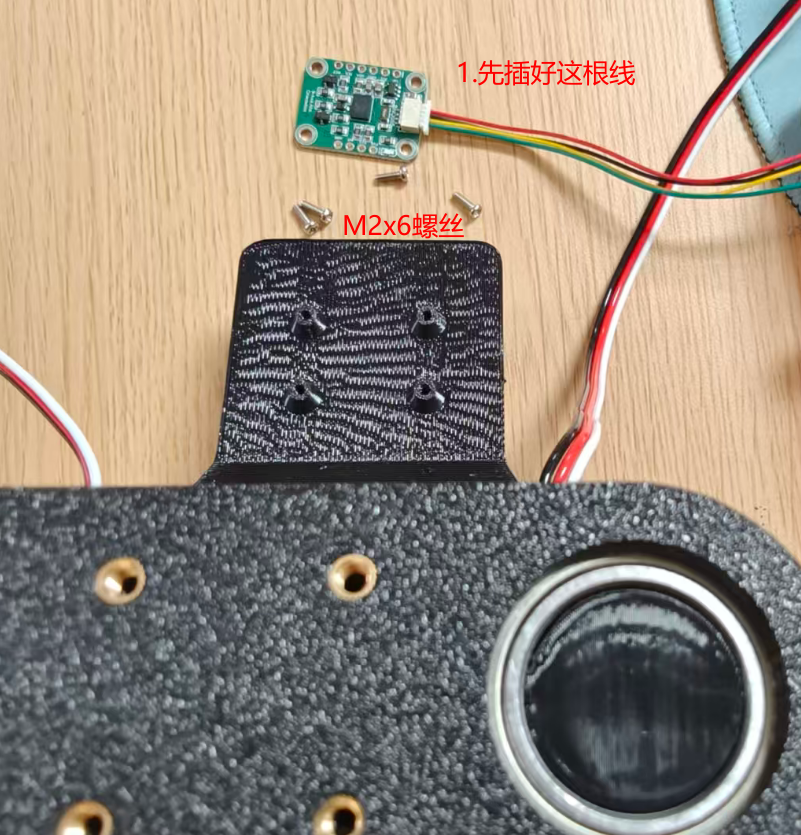
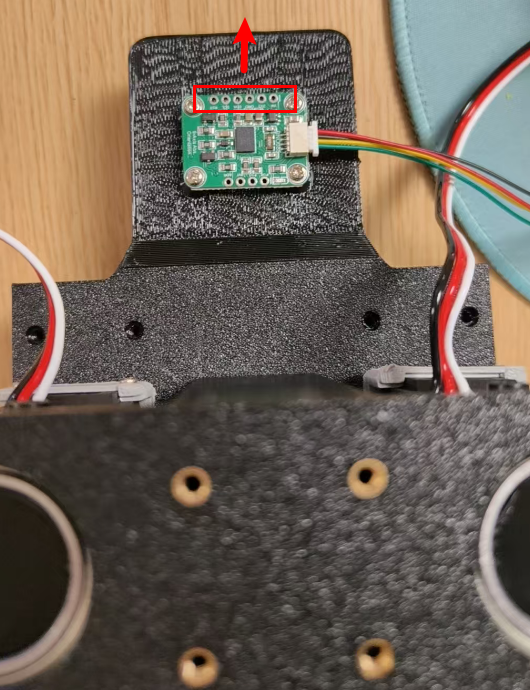

<!DOCTYPE lake>
<p data-lake-id="u86d8e4e3" id="u86d8e4e3"></p><p data-lake-id="uf96e3cdc" id="uf96e3cdc"><span data-lake-id="u17e0e633" id="u17e0e633">安装完成之后，如下图所示。注意陀螺仪安装的朝向</span></p><p data-lake-id="u115e6296" id="u115e6296"></p>